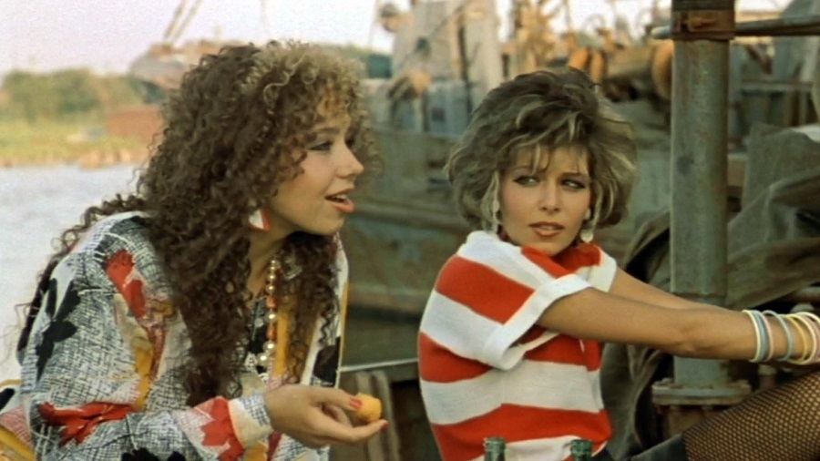
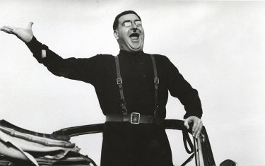

«Мы ждем перемен!»
— Гимн поколения, рожденный в кино
Кино без цензуры
С приходом Гласности кинематограф взрывает десятилетия молчания. На экраны выходит «чернуха» — предельно реалистичное кино, обнажающее социальные язвы и быт.
Запретных тем больше нет. Режиссеры обращаются к теме молодежного бунта и сталинских репрессий. Фильм «Покаяние» становится символом морального очищения всей страны.
Распад империи
Кино этого периода — документ времени. Оно фиксирует хаос и тревогу, когда вчерашние андеграундные герои становятся главными лицами кинополотен, предвещая конец великой эпохи.
Визуальное наследие
Знаковые картины эпохи

Маленькая Вера (1988)
Фильм, шокировавший страну своим откровенным реализмом.

Покаяние (1984/1987)
Аллегория тирании и необходимости исторической памяти.